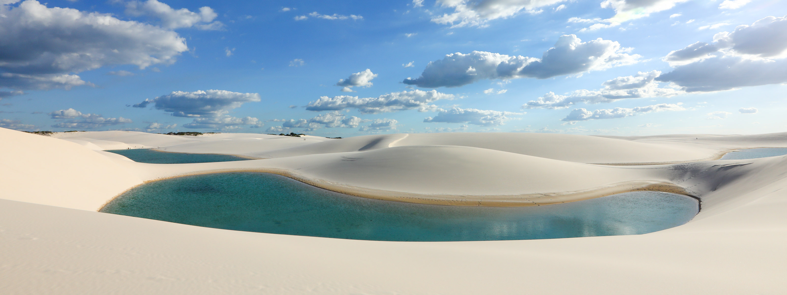

Galeria de Imagens



O Parque Nacional dos Lençóis Maranhenses, localizado no estado do Maranhão, Brasil, é um deslumbrante deserto tropical com vastas dunas de areia branca que se estendem por mais de 1500 km². Entre essas dunas, formam-se lagoas temporárias durante a estação chuvosa, criando um contraste espetacular com a areia e oferecendo um cenário de beleza única. A região é um paraíso para a biodiversidade, com fauna e flora adaptadas ao ambiente árido e áreas de vegetação nativa. O parque é conhecido por suas paisagens impressionantes, ótimas para ecoturismo e fotografia, e oferece experiências de passeios de jipe, caminhadas e mergulhos nas lagoas cristalinas.